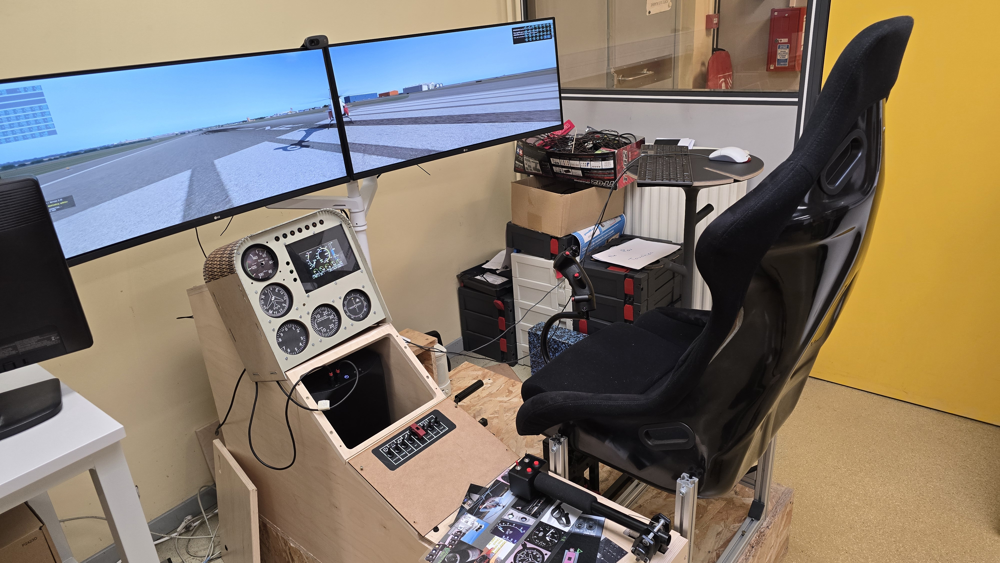
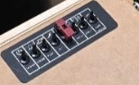
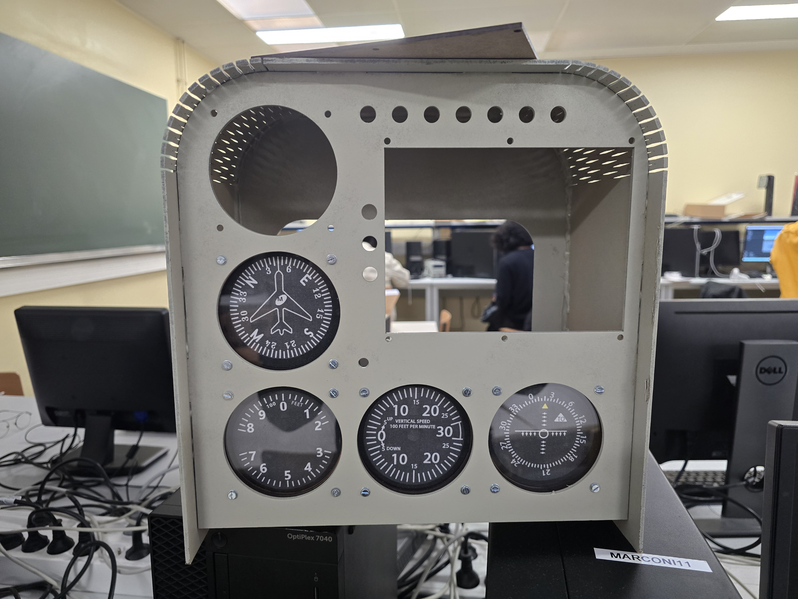
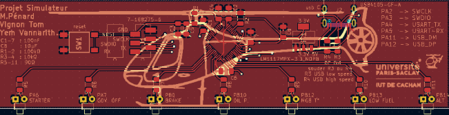
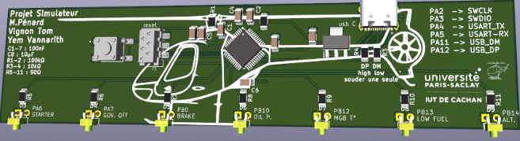
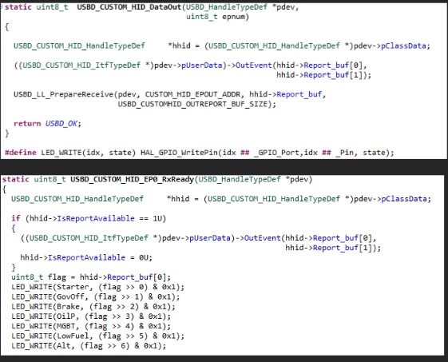
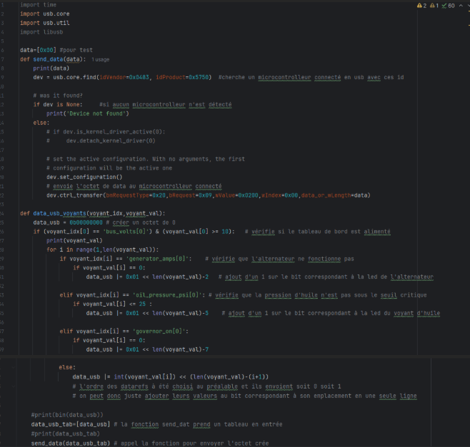

Ce projet majeur de deuxième année visait à concevoir et réaliser une interface matérielle fonctionnelle pour le simulateur de vol de l'IUT de Cachan. L'objectif était de créer un panel de contrôle réaliste, capable de faire le lien entre le matériel physique (boutons, interrupteurs, voyants) et le logiciel de simulation professionnel X-Plane 11, notamment pour le pilotage d'un hélicoptère.

Test final en immersion dans le simulateur de vol de l'IUT, validant l'intégration de nos commandes.Le projet s'est déroulé sur l'ensemble des semestres 3 et 4. Le semestre 3 a servi d'introduction avec la réalisation d'un PCB et d'une interface homme-machine via STM32 IDE, permettant d'envoyer des données depuis un appareil vers l'ordinateur. Nous avons configuré le système comme un clavier d'ordinateur pour envoyer les informations des boutons vers le simulateur X-Plane afin de contrôler l'hélicoptère.

Configuration des commandes physiques pour le contrôle de l'hélicoptère sous X-Plane.Au semestre 4, le travail en binôme consistait à compléter le Glass Cockpit de l'appareil. Sur la base existante, il manquait le tachymètre, l'écran et les voyants d'alerte. Notre groupe s'est spécifiquement chargé de la conception et de l'intégration du bloc des voyants d'alerte.

Structure du Glass Cockpit : intégration du système d'alerte visuel.La phase de CAO a permis de structurer l'architecture électronique du panel. J'ai conçu le schéma électrique en intégrant la gestion des signaux pour les commutateurs et le rétroéclairage. Le routage a été optimisé pour une fabrication double-face, garantissant la compacité nécessaire à l'intégration dans le panel physique du cockpit.


L'étape de brasage a consisté à assembler les composants critiques sur la carte. J'ai intégré des LEDs de couleurs différentes en respectant scrupuleusement la datasheet du véritable hélicoptère Cabri G2 pour un réalisme maximal. L'électronique repose sur un microcontrôleur STM32L073, alimenté et programmé via un port USB-C. Un régulateur de tension a été ajouté pour abaisser le 5V de l'USB vers le 3,3V nécessaire au microcontrôleur, tandis qu'un connecteur Micromatch assure la liaison avec les autres modules.
La programmation embarquée a été réalisée sous STM32CubeIDE. Le code gère l'acquisition des entrées numériques des boutons et pilote les sorties pour les voyants d'alerte. Nous avons configuré la pile USB pour que la carte soit reconnue nativement comme un périphérique d'interface humaine (HID), permettant une communication fluide et sans latence.

Configuration des GPIO et de la communication USB sous STM32 IDE.Pour assurer le lien entre le matériel STM32 et le logiciel de simulation, un script Python a été développé. Ce script utilise diverses fonctions pour lire les datarefs de X-Plane 11 et transmettre les états de vol vers notre panel, permettant d'allumer les voyants d'alerte (Master Warning, Low Rotor, etc.) en fonction des incidents simulés.

Script Python gérant l'échange de données en temps réel entre le simulateur et le PCB.